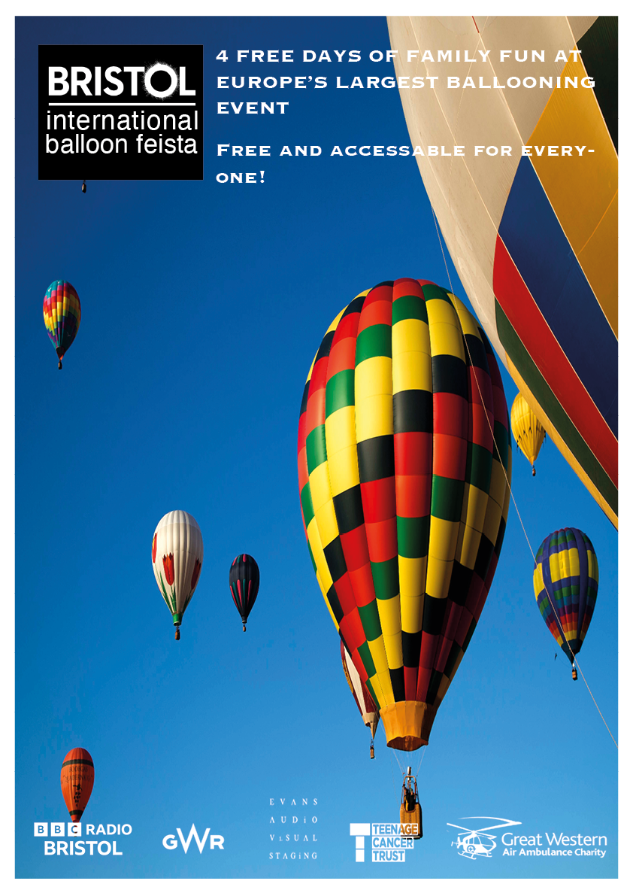
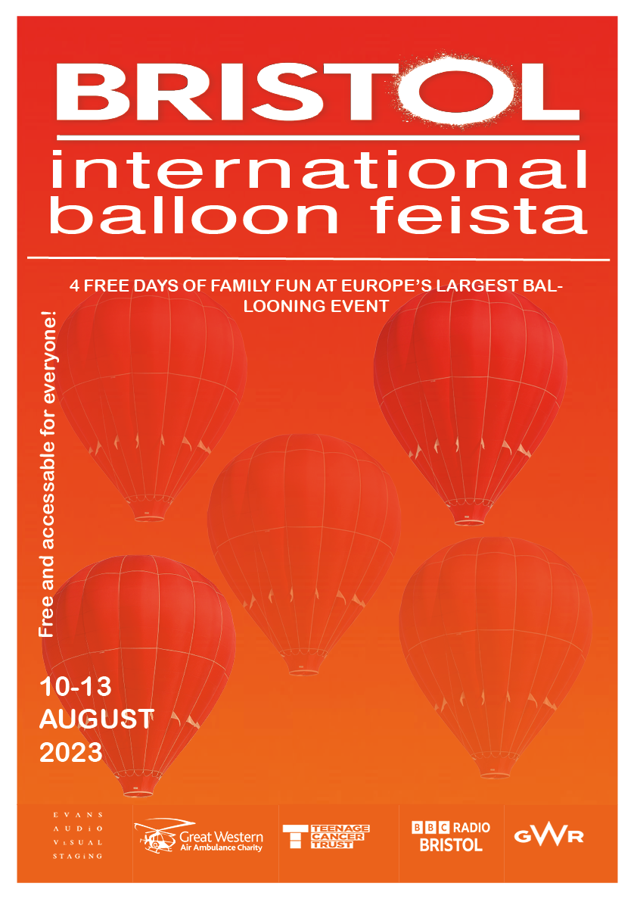
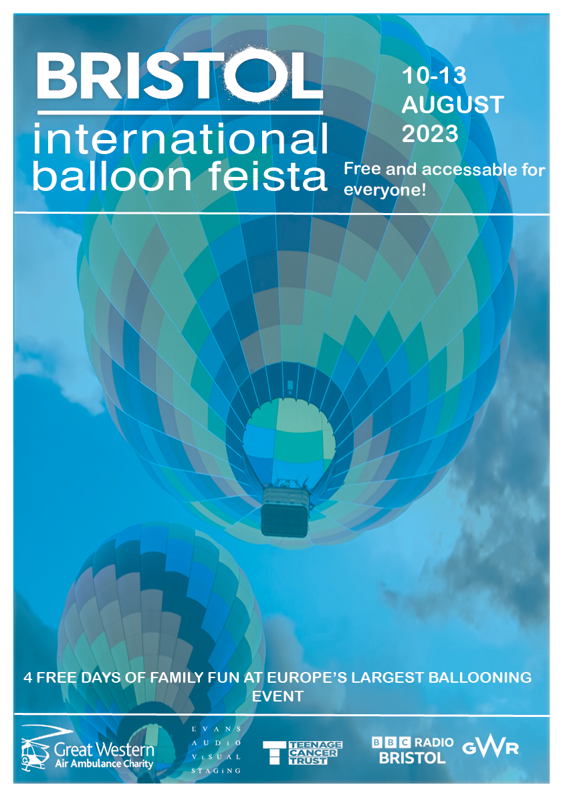

This is my first poster that i created on indesign. with my first poster i made
i wanted to make it simplistic and easy to look at so i kept with a plain backgorund of hot airballoons to show to the audience
what we are promoting wihtout having to say alot.
i kept with the colour scheme of blue and white and with this i took the background colour off the logos to make it transparent.

For my second poster i changed up the theme and went with the colour scheme of orange and did a gradient background,
and changed the opacity of the images to make them fade in and out. Also i kept with the theme of
logos having a transparent background to keeo it a white colour scheme throughout all.

For the last poster i created i did a blue theme with a low opacity to see an image behind it in a blue fade. I put a blue background underneath the hot airballoon image and then changed the opacity on the image to fade in with the background.
i added lines to this poster to add some shape for the logos and title to split apart text and images.
for each one i created a white border for each one so they fit in line with each other and look similar even if that have different themes.